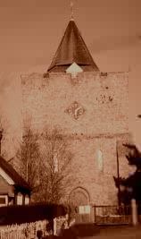St. Nicholas, Leeds
Details of the Bells
| Treble | 5 cwt | G | 1751 | Robert Catlin |
| 2 | 5½ cwt | F | 1751 | Robert Catlin |
| 3 | 5¾ cwt | E | 1751 | Robert Catlin |
| 4 | 6½ cwt | D | 1751 | Robert Catlin |
| 5 | 7 cwt | C | 1751 | Robert Catlin |
| 6 | 8½ cwt | B | 1751 | Robert Catlin |
| 7 | 10 cwt | A | 1911 | Alfred Bowell |
| 8 | 12 cwt | G | 1638 | John Wilnar |
| 9 | 13½ cwt | F# | 1911 | Alfred Bowell |
| Tenor | 20 cwt | E | 1617 | Joseph Hatch |
PART OF A FAILED PEAL ATTEMPT OF KENT T.B. MAJOR (REEVES 5120) IN MAY 1999 TO MARK 225th ANNIVERSARY OF FIRST PEAL IN METHOD AT LEEDS
PART OF A QUARTER PEAL OF HALF MUFFLED BOB MAJOR IN MEMORIAM: FRANK CONLEY ESQUIRE, OF DOVER
PART OF A QUARTER PEAL OF BOB ROYAL FOR THE ANNUAL CHURCH CAROL CONCERT 22nd DEC 1999
PART OF A TOUCH OF STEDMAN QUATORS; SUNDAY MORNING; SEP 2001.
PART OF A FAILED PEAL ATTEMPT OF BOB MAJOR (ANNABLES 5040) FOR THE MASTER'S 21ST BIRTHDAY 1999
Ringing Times
Members are encouraged to attend practices as they will on Fridays; 8 - 9pm.Members may like to inform the Master of ASELY of their intention to attend.
ASELY Master: C.J. Cooper
Tower History
| 1119 | The Normans enlarged the church and built the tower. |
| 1617 | One bell, of 20 cwt, was cast by Joseph Hatch of Ulcombe. |
| 1638 | Three lighter bells were cast by John Wilnar, creating a heavy ring of four. |
| 1751 | A major restoration was undertaken on the entire church, including an augmentation of the bells. Six bells were added, making a ring of ten. See History for details of the Leeds Youths outstanding ringing achievements here 1751 - 1830. |
| 1784 | 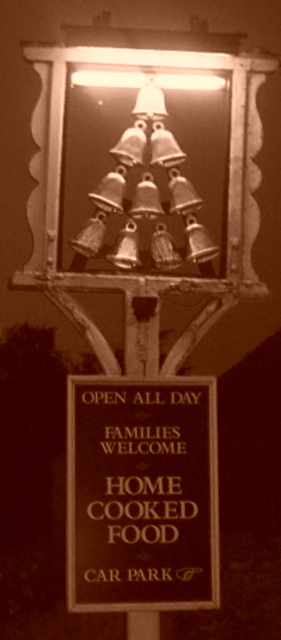 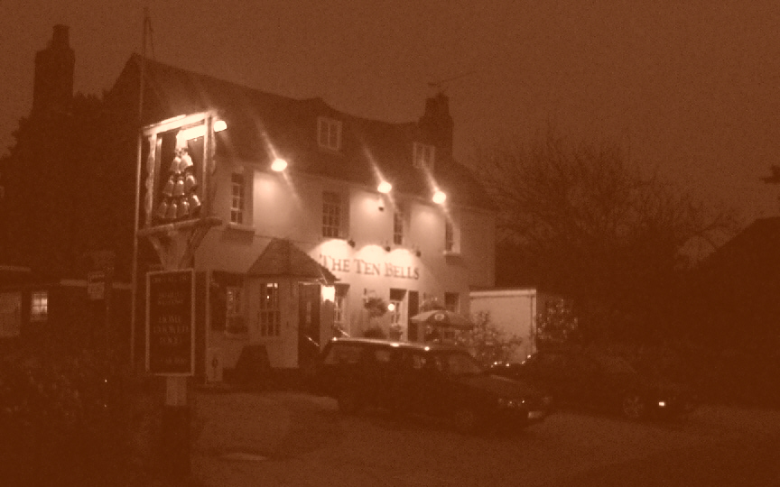 Mr Sweetlove (a relative of one of the ringers) opens the "Ten Bells" Inn (The current Meeting House HQ) |
| 1894 | A KCACR meeting was held. Details... |
| 1897 | Special Celebrations for Queen Victoria's Diamond Jubilee (click on cover of magazine below) 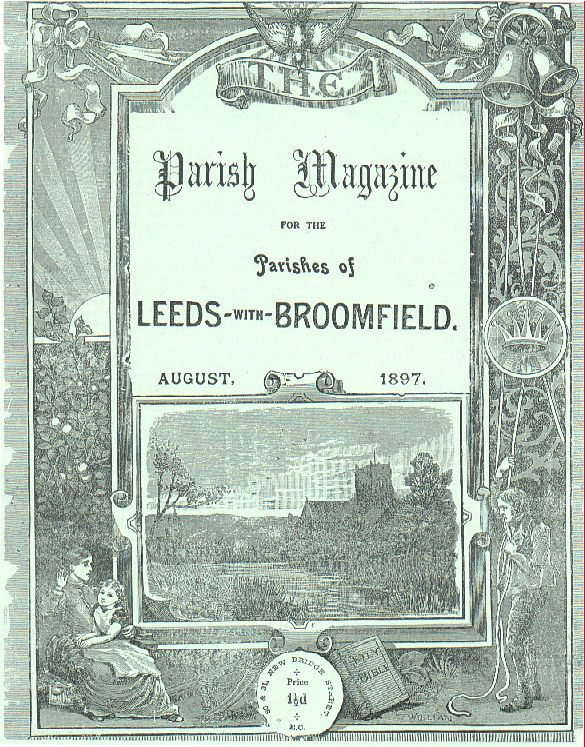 |
| 1898 | Possible rehang, but work unsatisfactory. 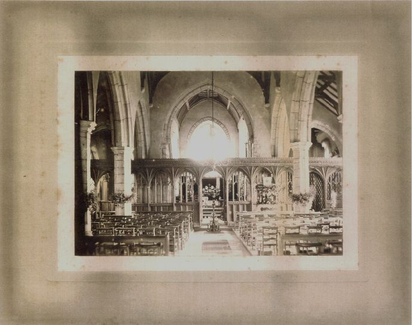
Leeds Church c.1890 |
| 1911 | Bells rehung by Mr A. Bowell of Ipswich (see History). |
| 1927 | Tenor rehung again by Mr A. Bowell of Ipswich |
| 1932 | Spire removed due to instability. |
| 1933 | Mr. Sid Russell becomes verger. Details... 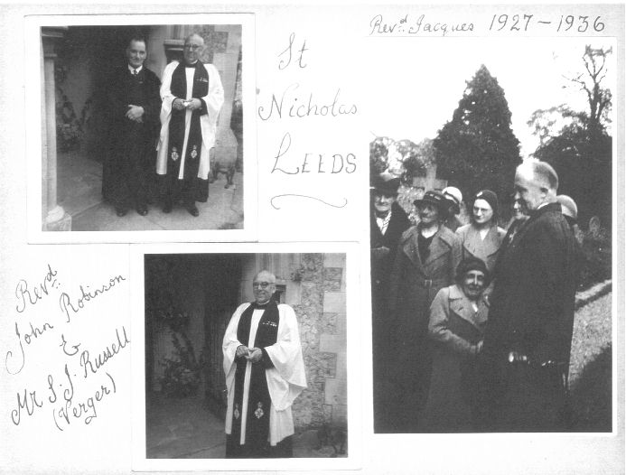 |
| 1963 | Spire replaced. Disastrous redecoration of ringing room! |
| 1968 | Newspaper Article regarding the Village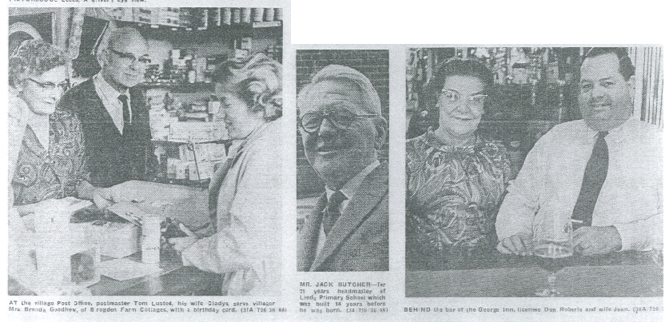 |
| 1970's | The Church Choir in about 1974  K. Simpson (CW) ? J. Butcher ? ? ? ?(CW) ? ? ? ?(Organist and Choirmaster) Rev J. Dilnot (Vicar) S.J. Russell (Sexton & Verger) Mrs L. Faulkner Mrs P.J. Heale (now Griffiths) ? Children in front row - names unknown |
| 1980's | Ellacombe hammers presumed to have been removed at this stage. |
| 2000 | Ellacombe hammers cleaned and stored in ringing room awaiting reinstatement. |
| 2001 | 250th Anniversary year of the Company. The peal by the Society
to mark the 250th anniversary of the first peal on the bells was
unsuccessful (though the Kent County Association sent their best 9
ringers and their best conductor who achieved the 6480 Bob Quators).
The ASELY's lost peal was more than compensated for by a spectacular
250th Anniversary Dinner at Leeds Castle which the first Master, James
Barham, would have been proud of. 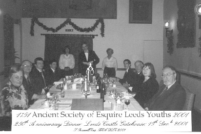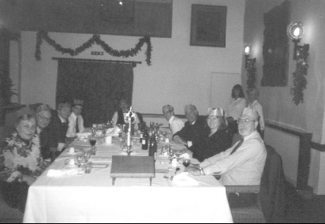
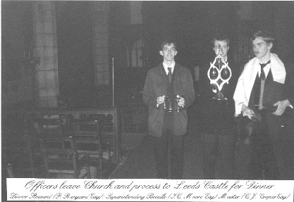
|
| 2002 | A Quarter Peal was rung in thanksgiving for the life of H.M. Queen Elizabeth the Queen Mother |
| 2003 | Rev'd David C. Brookes retired as the last true Vicar
of the Parish. Members of the ASELY attended his farewell dinner
in Hollingbourne Village Hall before ascending Leeds tower and ringing
a peal of 5040 Kent T.B. Major to mark Rev. Brookes' retirement and to
mark 70 years as Verger for Mr S.J. Russell and 70 years as a member of
the Royal British Legion. The Master of the ASELY fashioned
a splendid peal board marking the peal, which was dedicated in Church
by Rev Robin Gill in September 2003. Subsequently this board was
erected in the tower, permission having been obtained. 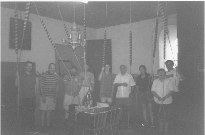
The band who rang in the Quarter Peal of Cambridge S. Royal for Rev David Brookes retirement concert. |
| 2004 |
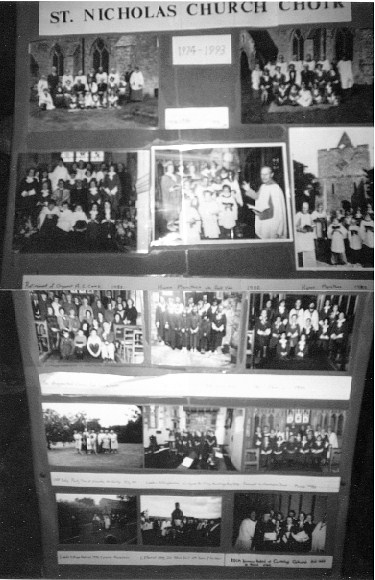
Long history of a large choir - in 2005 there are now five members (including the Master of the ASELY) Following a steady decline in congregation, and a corresponding dissatisfaction by the regular Sunday service ringers at the attitude of one particular clergyman, particularly with regard to the bad manners of allowing certain officials with a personal grudge against the Society and its aims to inspect the bells and write scurrilous reports, members of the Society resolved that the Master should write a firm letter to the Cleric in question, and that we would try and ring for the retimed service on the 1st Sunday of the month, but that we would therefore not ring for the service on the 2nd Sunday, as it was a 'FAMILY SERVICE' - which fulfilled no useful purpose as it was very rare for any families or children to be present. There was also a deliberate ploy to sideline the (already only occasional) Choral Matins services. The response which members expected to their letter was one of discussion and concern at our upset. However, it suited this Cleric to reappoint one Christopher R. Saunders as Tower Captain (C.R. Saunders had resigned as Captain during the Incumbency of Rev Brookes after a disagreement with regard to low standards of ringing on Sundays; the ASELY taking over a couple of years after this disagreement and ringing to a much higher standard) without any consultation with the ASELY. It seems that C.R. Saunders was instructed to collect the key for the tower from a lady parishioner, and that he and others removed all the ASELY property from the tower, and dumped it outside the residence of the ASELY Master on the night of Friday August 6th 2004. The Cleric - who claims that he did not give authorisation for the removal of the property and dumping at the Master's front door, one Rev. Robin Gill, who also spoke in the House of Lords in favour of a bill to legalise Euthanasia in late 2004 - sent a letter to the Master of ASELY which arrived on Saturday 7th August 'thanking him for his services'. The Society began a massive Campaign through the Press to regain their Headquarters Tower. TO READ THE TRUE DETAILS OF THIS STORY PLEASE CLICK THIS LINK |
| 2005 | The fight to regain Leeds belfry as Society Headquarters and to save the Church from terminal decline continues. Only four or five bells are rung on Sundays by C.R. Saunders and his comrades, numbers in the congregation are usually between 10 & 15 souls, and the choir now numbers 3 (four when the Master of ASELY attends service on the1st Sunday). |
| 2007 | Following a change in Churchwarden it is pleasing to report that the situation in the Church and especially the belfry is now much more stable once more. ASELY members are encouraged to assist the local Leeds Society of Ringers and the regular visitors to their Friday practice. |
{kind=link}
{kind=link}
{kind=link}
{kind=link}